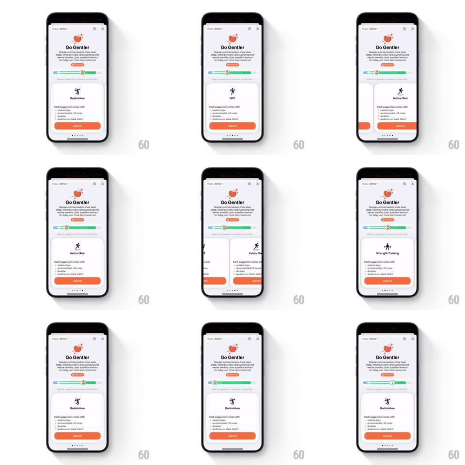

Media
Frame-by-frame

Rebuild this interaction 1:1: Gentler Streak's Go Gentler premium screen - a slider at the top scrubs a carousel of workout-suggestion cards below it, so dragging browses the benefits.

Rebuild this interaction 1:1: Gentler Streak's Go Gentler premium screen - a slider at the top scrubs a carousel of workout-suggestion cards below it, so dragging browses the benefits. ## Integration Integration: stack-agnostic spec - springs given as stiffness/damping, timed motions as duration + curve; map every value to your framework and animation library of choice. ## Scene The "Go Gentler" upsell screen: heart mascot, pitch copy, a small orange pill, and a horizontal slider with a green-to-blue gradient track. Beneath, a card carousel of workout suggestions (Badminton, HIT, Indoor Run...) - each card shows a line-art activity icon, the activity name, and a benefit list, with an orange Upgrade button and page dots below. ## Motion spec Pattern: slider-scrubbed card carousel. - Dragging the slider handle scrubs the carousel 1:1: the track's full width maps to the full card range; cards slide horizontally in lockstep with the handle (no independent fling). - The handle's ring fills with the track's local color under it; a soft tick haptic fires as each card crosses center. - Release: the carousel snaps to the nearest card (spring ~380/24) and the slider handle glides to the matching position with the same spring - they settle together, never separately. - The snapped card lifts slightly (scale 1 to 1.02, shadow deepens) while its neighbors sit 15% smaller and 40% faded at the edges. - Cards can also be swiped directly: the slider handle then follows the card position 1:1 in reverse - the two controls are one shared value. - Card changes swap the icon with a draw-in (stroke-dash, 350ms) and stagger the benefit rows (60ms apart, translateY 8px). ## Calibration - Page dots mirror card count and highlight with the same spring timing as the snap. - The slider is the scrubber - no autoflow; nothing moves without touch after the initial entry stagger. ## Reduced motion Cards snap without scale/fade neighbors; icon swaps crossfade. ## Don't miss - The bidirectional binding is the point: slider drags cards, cards drag slider. - The activity icons are single-stroke line art, matching the app's illustration system.